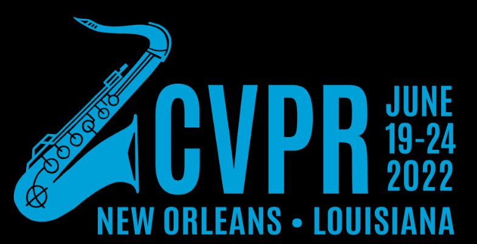

ALFRED Challenge


🏆 Challenge Winners 🏆
1st Place 🥇: Xiaotian Liu, Hector Palacios, Christian Muise (ServiceNow Research & Queen's University)
2nd Place 🥈: Michael Murray, Maya Cakmak (University of Washington)
Can you do even better? Code, precomputed features, and AI2Thor simulator are all available for a quick start on GitHub